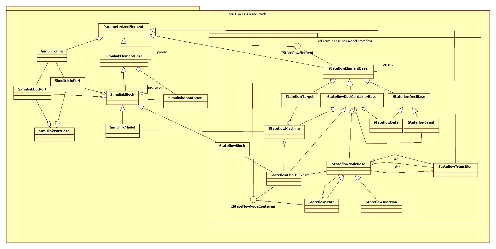

See: Description
| Class | Description |
|---|---|
| ParameterizedElement |
This class usually serves as base class for all classes that have a
key-value-mechanism for parameters.
|
| ReferencedBlockInfo |
Information on a referenced block.
|
| SimulinkAnnotation |
Class for Simulink annotations, which are basically comments in the Simulink
model.
|
| SimulinkBlock |
A Simulink block has a type and maintains a parameter map, a list of sub
blocks, a list of annotations and in/out-ports.
|
| SimulinkConstants |
This class contains constants used by the Simulink model builder.
|
| SimulinkElementBase |
Base class for Simulink elements.
|
| SimulinkEncodedDataUtil |
Util class to work with the data provided by MatResource and MatData sections
(that usually appear in mdl files).
|
| SimulinkInPort |
A Simulink inport.
|
| SimulinkLine |
A Simulink line.
|
| SimulinkModel |
A Simulink model a specialized Simulink block that primarily maintains the
default parameters of blocks, annotations and lines.
|
| SimulinkObject |
Class for Simulink objects, which are a construct for structured storage of
meta-data in the model.
|
| SimulinkOutPort |
A Simulink inport.
|
| SimulinkPortBase |
Base class for Simulink ports.
|

SimulinkModel.getAnnotationDefaultParameter(String).
SimulinkModel.getLineDefaultParameter(String).ParameterizedElement.getParameter(String).SimulinkModel.getTypeBlockDefaultParameter(String, String).SimulinkModel.getBlockDefaultParameterNames(String).ParameterizedElement.getParameter(String)
this options are automatically resolved in the reversed order, i.e. it is first checked
if the block itself defines the parameter. If not, the default parameter
for the block type is looked up. If this is undefined, too, the block
default is returned (if there is one).ConQAT.lib Simulink - 2015.2